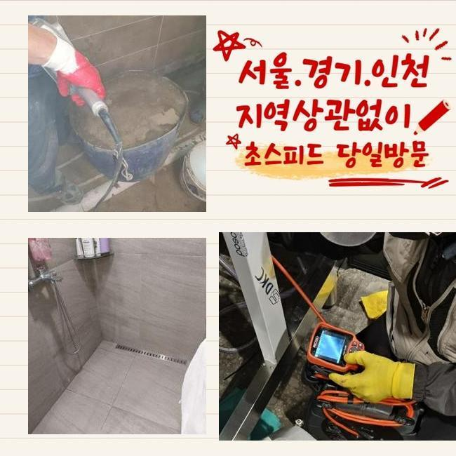
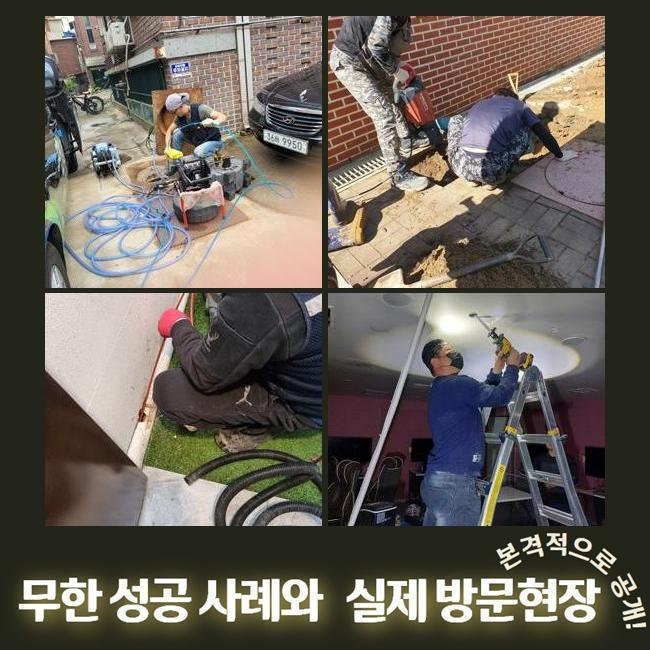
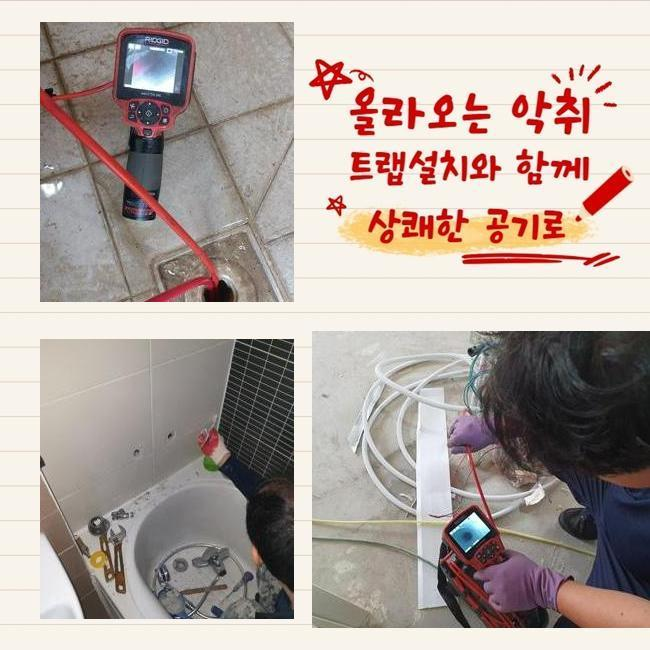
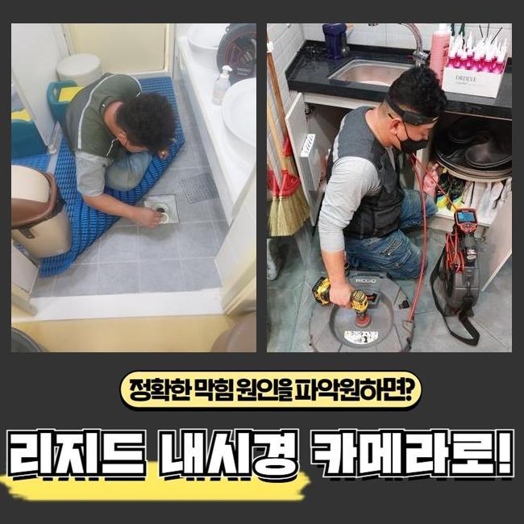
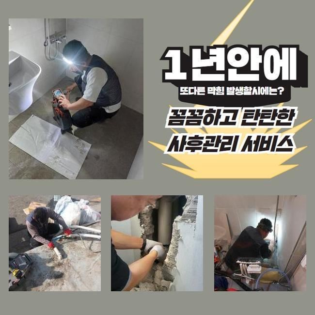
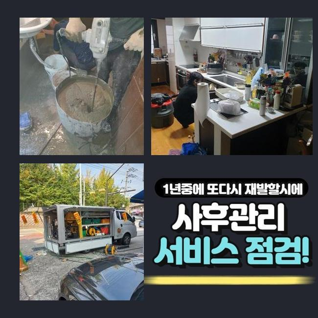
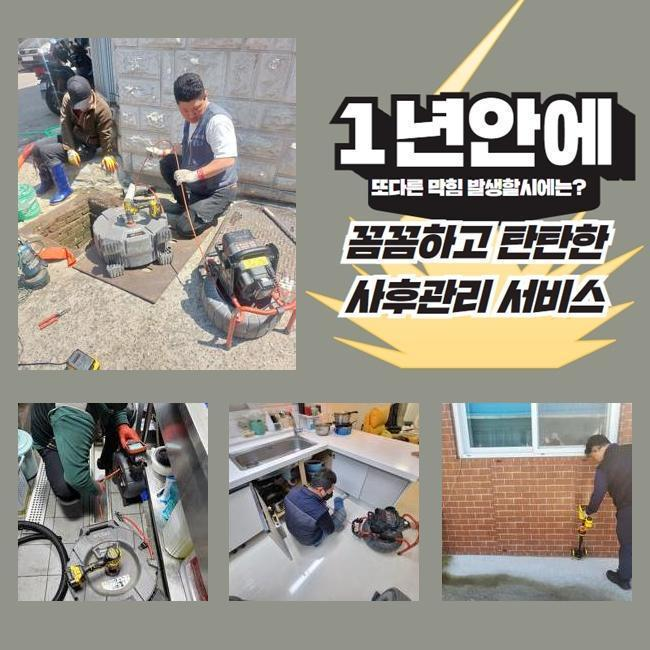

🏠 천안 쌍용동하수도역류 목천읍 집수정청소 배관뚫는업체
천안 쌍용동 싱크대막힘 전문 시공 후기

📋 작업 개요
- 위치: 천안 쌍용동, 쌍용동, 천안
- 서비스 유형: 싱크대막힘, 하수구막힘, 배관막힘, 집수정막힘, 역류해결, 뚫는업체, 배관청소, 고압세척
- 작업 일시: 2025. 3. 10. 17:53
- 업체명: 하수구수사대 (010-5615-2118)
🔍 문제 상황
천안 쌍용동하수도역류 목천읍 집수정청소 배관뚫는업체
어느곳이든 하수구가 막혔다면 빨리 내방해서 처리해내는 전문가입니다
대부분의 경우에는 셀프적으로 처리해볼때 하수도 세정제나 베이킹소다같은 제품들을 사용하실겁니다
세정제 제품을 활용할경우 배관내부에 퇴적되어있는 오염물을 없애보는데 도움은 됩니다
그렇지만 이런 방식들을 진행해도 제거하기 까다로운 잔해물들이 있죠
쌓이고 쌓이며 덩어리형태로 굳게되는 석회물이에요
석회물질의 경우에는 내시경을 활용하여 상태에 대해 파악한후 확실한 방법을 통하여 이물을 없애주는것이 요구됩니다
업체에게 맡겼을때 어떤방법을 통하여 굳은 오염물을 없애는지 현장사례와 함께 안내드릴게요
방문했던곳은 가정안에서 발생하게된 배관막힘 건이에요
욕실아래에 배수구가 막히게되면서 의뢰하신 것인데요
의뢰자분이 전달주신 정보와 현장상황을 보면서 막힌이유를 조사해봤죠
고객께서는 얼마전부터 물이 빠지는것이 점차점차 느려졌다고 하셨고 악취까지 난다고 하셨죠

🔎 원인 분석
💡 전문가 진단: 정밀 진단 장비를 사용하여 슬러지의 고착 여부를 판명하고 타격/세척 작업을 실시했습니다.
혼자서 처리해보고자 과탄산소다와 락스로 세척하신 상황이었어요
이렇게 했는데도 불구하고 악취현상은 해결되지않고 배수상태도 원활하게 돌아오지 않으셨죠
시간이지나며 배수상황은 심화된 상태로 막히게되서 저희업체로 요청주신 것이죠
저희들은 고객분께서 말씀해주신 부분들과 현장상황을 보면서 원인 찾기에 돌입했어요
악취문제가 발현된 배수구막힘은 막힌연유를 정확히 찾는게 중요하겠습니다
석션도구를 써서 바닥쪽에 고여있는 물들을 제거한후 배관트랩을 분리해주기 시작했어요
하수구주변을 들여다봤지만 내시경장비가 없는 상태에서 원인을 발견하기 어려웠죠
하수구속을 살펴볼수있는 하수관내부 촬영기계를 투입했어요
촬영기가 하수구속으로 진입하니 군데군데 오염물질이 모니터로 확인됐죠
그치만 막힘문제를 유발시킬 정도가 아니어서 계속하여 배관안으로 내시경을 주입해보니 막힌원인에 대해 알아낼수있었죠
모발이나 다양한 이물이 오랜시간 퇴적된 석회덩어리 이물이었어요
하수구안에서 누적되버린 오염물들은 물길자체를 좁게하고 통로속에 오염물질이 지속적으로 썩으면서 악취현상도 일어난겁니다

🔧 작업 과정
석회덩어리는 잔해물들이 뭉쳐지며 덩어리상태가 되버리는데 하수구를 막히게하는 가장 큰 원인인데요
날이가면서 더욱 단단해질수 있으며 제거방식도 굳은형태마다 차이점이 있답니다
내시경을 통해 확인한 오염물은 덩어리크기와 굳은상태가 심각해보이지 않아서 석션기를 통해서 제거해낼수 있었죠
석션기의 경우 배관내에 쌓여진 잔여물을 빨아들여주는 장비인데요
하수구파손이 발생되지않게 세심한 방법으로 청소하고자 카메라를 같이 투입하여 수리를 진행했는데요
내시경으로 살피면서 이물질이 보이는 통로쪽에 석션기로 빨아들여 이물을 제거했어요
하수도 깊은곳도 내시경을 투입하여 달라붙어있는 오염물과 슬러지들을 청소했죠
오염물제거를 상세히 진행하고나서 하수구카메라로 하수관내부를 살펴보는것을 반복하면서 착수했어요
반복적인 과정을 거치니 퇴적되어있던 각종 찌든때와 오염물질들이 깔끔히 소거된게 모니터로 확인할수있었죠
이물을 전체적으로 제거하자 악취증세도 줄어드는것을 확인할수있었네요
마치기전에 배수를 살펴보기위해 물을틀은후 배수구에 흘려보내면서 배수가 정상적으로 진행되는지 알아보았죠
다량으로 잔해물을 제거했으므로 문제없이 빠져나가는것을 확인할수 있었는데요
테스트하는 작업을 마친후에 철수했어요
여러번 말씀드렸지만 업체를 통한 해결과정이 필요한이유에 대해 설명드리면 막힌이유에 관한 부분들을 확실하게 알수있어야 뚫어낼수있어요
덩어리진 오염물의 경우에는 클리너로 없애기란 어렵답니다
혹시라도 방치하실경우 물이새거나 넘치는 현상들로 이어질수가 있으므로 신속한 해결이 요구된답니다
돌처럼 슬러지들이 굳어졌다면 석션외에 다른도구가 필요하기도 해요
샤프트기라는 장비로 덩어리를 산산조각 낼수있기에 막힘정도마다 활용되는 도구들이 다를수있죠
하수도가 막히게 되었을때 주변에서 알려준 다양한 방법들로 해결할수있다고 생각하실겁니다


✅ 작업 완료
다양한 방법들을 이용해도 배수되는것이 깔끔하지 않다거나 심각한 냄새도 하수도에서 올라온다면 전문업체에 맡기는게 좋습니다
싱크대나 샤워실처럼 물이 빈번하게 이용되는곳은 정기적으로 검사하여 막힘현상들을 예방해주시는게 중요하답니다
셀프적으로 방지할수있는 방식을 알려드려보면 거름망이나 하수구트랩을 설치하면 악취현상과 막힘문제를 어느정도는 막을수있죠
공용시설처럼 다세대가 거주하는 시설이라면 빠르게 처리해드릴수 있사오니 언제라도 맡겨주신다면 조속히 방문할게요
작업하는 과정에있어 투명하게 공개하니 작업이 필요하실때 전화주신다면 세세하게 응대를 진행해드리도록 하겠습니다!




⚠️ 주방 싱크대 배관 막힘 예방 수칙
- ✅ 기름기가 묻은 식기나 프라이팬은 설거지 전 키친타올로 반드시 기름때를 닦아내세요.
- ✅ 주기적으로 싱크대 개수대에 뜨거운 물을 가득 받아 한 번에 내려 배관 내부 기름을 씻어내세요.
- ✅ 배수구 거름망을 미세한 필터로 사용하시고 음식물 찌꺼기가 틈으로 새어 들지 않게 관리하세요.
- ✅ 베이킹소다와 식초를 뜨거운 물과 함께 일주일에 한 번씩 부어주면 배관 살균과 막힘 예방에 좋습니다.
💡 핵심 정리
- 확실한 장비 작업(내시경 점검 및 샤프트 스케일링)으로 원인을 뿌리 뽑습니다.
- 작업 후 1년 이내에 동일한 부위 재발 시 100% 무상 A/S 서비스를 보장합니다.
- 서울 · 경기 · 인천 전 지역에 24시간 언제든 긴급 출동할 수 있도록 항시 대기 중입니다.
❓ 자주 묻는 질문 (FAQ)
🚨 천안 쌍용동 싱크대막힘 문제로 고민이신가요?
정확한 원인 진단과 확실한 시공으로 재발 없는 해결을 약속드립니다.
24시간 긴급 출동 | 서울 · 경기 · 인천 전지역 | 1년 내 재발 시 무상 A/S